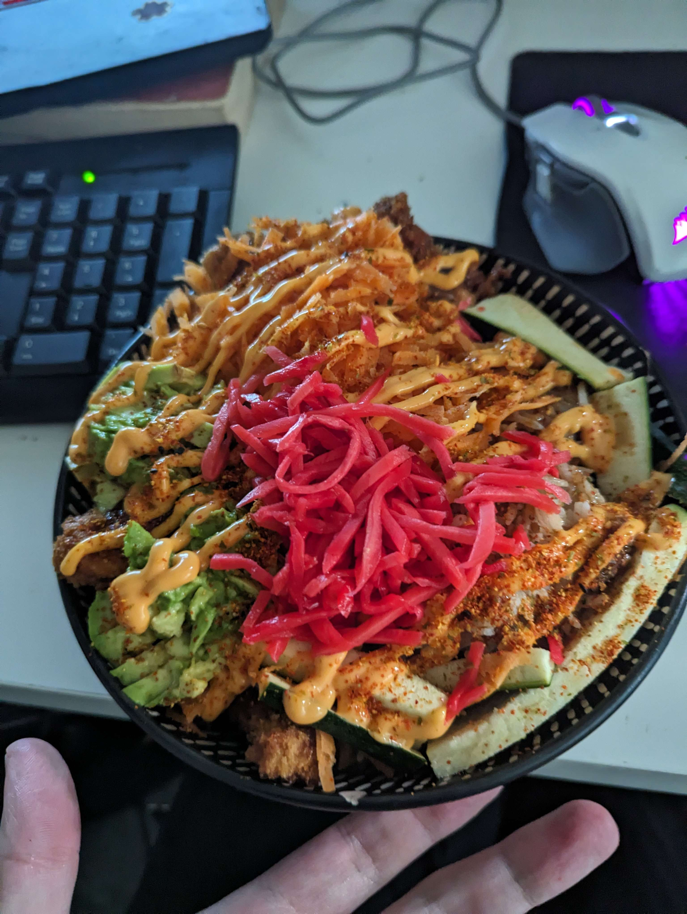

Chicken Katsu Rice Bowl

Ingredients
Makes two serves
- 1 Cup of Sushi Rice
- Sunflower Oil
- 1 Zucchini
- 1 Carrot
- 1 Avocado
- 50g Shredded Pickled Ginger
- 2 Chicken Breast
- 2 Eggs
- Cayenne Pepper
- Paprika
- 200g of White Flour
- 300g Panko Breadcrumbs
- Tonkatsu Sauce
- Siracha Mayo
- Togarashi Seasoning
Steps
- Cut and store Zucchini and Carrot, set aside.
- Pour flour, egg and breadcrumbs onto separate plates, make sure to separate the egg whites and discard the yolk.
- Add paprika and cayenne pepper in bread crumbs to taste.
- Cut chicken breast in half.
- Coat chicken in flour, then eggs then crumbs.
- Pour sunflower oil into pan, enough to deepfry the chicken and bring to heat.
- Wash rice and set on stove-top to boil and steam. Or cook in rice cooker if you have one.
- Fry the chicken at a medium heat for approx 5-8minutes or until deep gold, then flip and repeat.
- Cut chicken down the middle to check if finished, then cut into smaller pieces.
- Cut avocado in half, store other half for later away with half of zucchini, rice and carrot.
- Serve with togarashi on top of the cooked rice, and other sauces on top of the chicken.
- Lay remaining veggies on top of bowl.